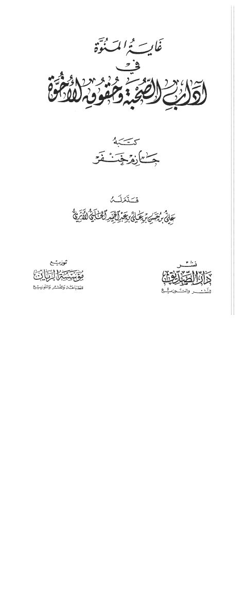

Downloads need an internet connection.
غاية المنوة في آداب الصحبة وحقوق الأخوة
Authors: أبو البهاء، حازم أحمد حسني خنفر
Editors: علي بن حسين بن علي بن عبد الحميد الحلبي الأثري
Publishers: مؤسسة الريان دار الصديق
**▫️ العنوان: غاية المنوة في آداب الصحبة وحقوق الأخوة** ▪️ المؤلف: #حازم_خنفر ▫️ المحقق: #علي_بن_حسين_بن_علي_بن_عبد_الحميد_الحلبي_الأثري ▪️ الناشر: #دار_الصديق • #مؤسسة_الريان ▫️ تاريخ النشر: 1430 - 2009 ▪️ بلد النشر: الجبيل، #السعودية • لبنان، #لبنان ▫️ الطبعة: 1 ▪️ عدد الأجزاء: 1 ▫️ الصفحات: 112 ▪️ نوع الوعاء: #كتاب ▫️ التصنيف الرئيسي: #الزهد_والرقائق ۪